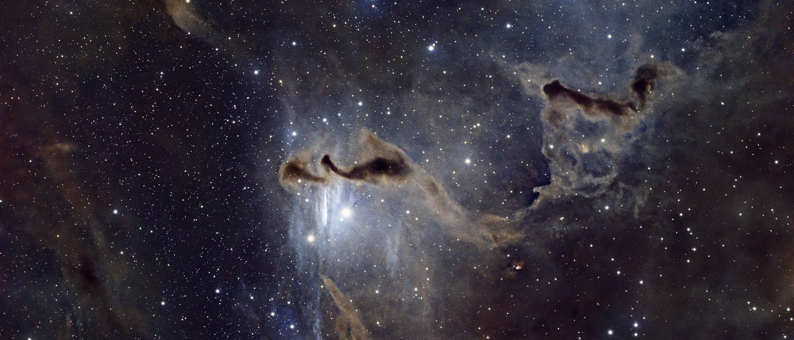

Director's note
What I keep returning to.
“The frame should feel discovered, not decorated. I am looking for the small gesture that makes an impossible world feel lived in.”


Verified creator · Director 042
Director of intimate impossible worlds—quiet characters, practical magic, and one unforgettable turn toward the light.
Director's note
“The frame should feel discovered, not decorated. I am looking for the small gesture that makes an impossible world feel lived in.”
Pinned premiere
Audience pulse
Milestones
Creator economy
Filmography
Curated releases, works in circulation, and the stories audiences keep returning to.
Audience pulse
Watch completion, returning viewers, remix velocity, supporters and the moments that create conversation.